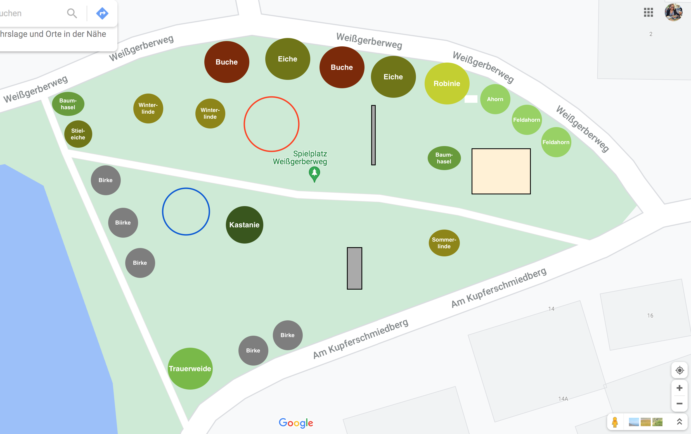

Was ist der Baumpfad?
Es gibt auf dem Spielplatz am Kirchweiher 11 verschiedene Baumarten und viele verschiedene Sträucher. Wir haben diese beschildert, um einige spannende Dinge über die Bäume zu erzählen und euch ein paar Quizaufgaben zum lösen zu stellen.
